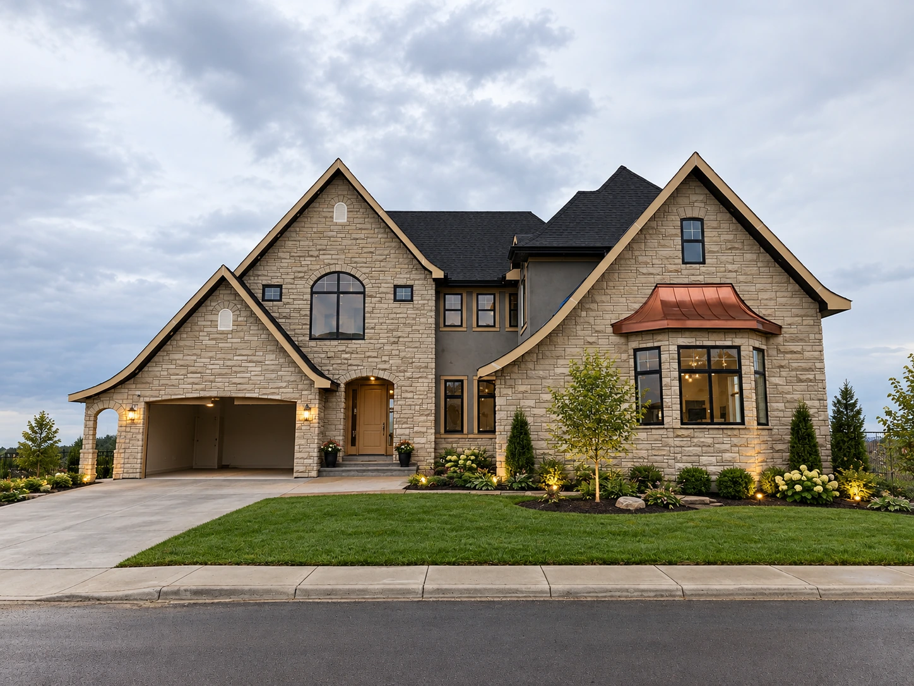
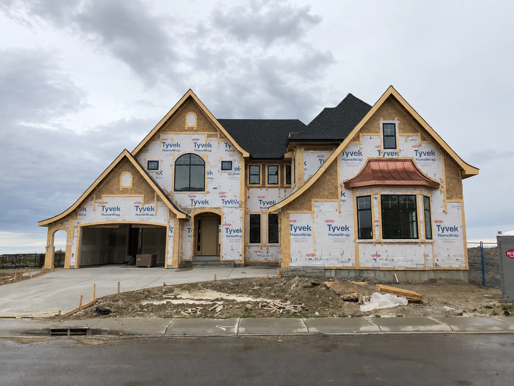

01 · Residential
Lakeside Residence
Ontario · Contemporary home
Light-toned architectural stone creates a calm base for dark glazing and warm entry lighting. The installation focuses on clean horizontal reading and restrained joints.
“The stone gave the home exactly the weight and permanence we wanted without making it feel heavy.”— Daniel M. · HomeownerOpen full project ↗


Before / After · Drag the handle